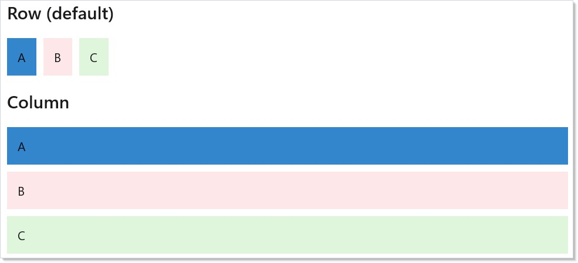
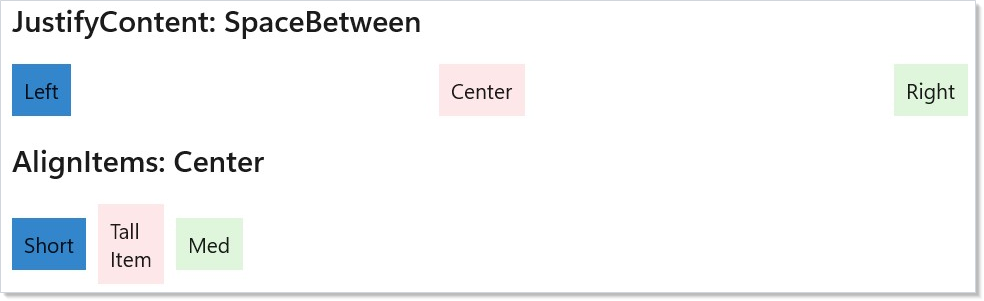
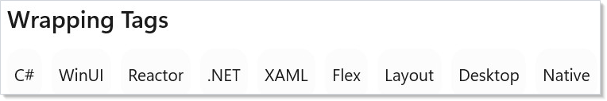
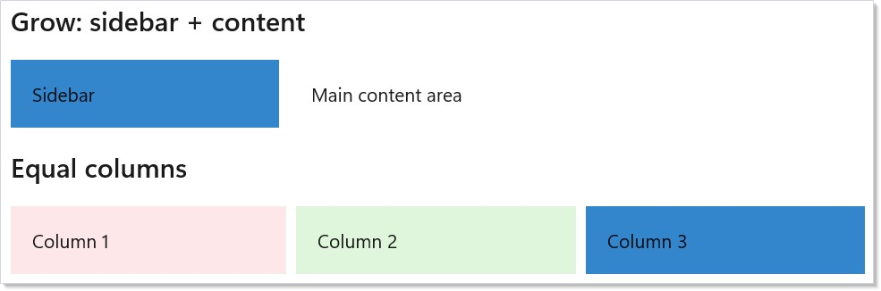
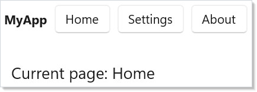
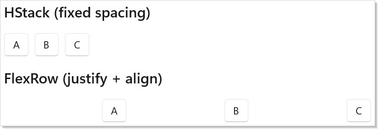

Microsoft.UI.Reactor (Reactor)'s flex layout reasons about two axes at once. The main axis distributes
children across available space — that's where JustifyContent,
Flex(grow:), Flex(shrink:), and Flex(basis:) apply. The cross
axis aligns each child against the container's other dimension — that's
where AlignItems and per-child AlignSelf apply. The same FlexPanel
composes both, and that combination is what unlocks the layouts that
VStack and HStack cannot express. A toolbar with a flexible spacer,
an app shell with a fixed sidebar and a fluid content area, a wrap-on-
overflow tag row — all three are FlexPanels with different
main-axis / cross-axis rules. Read this page before reaching for Grid
on a problem that's really "distribute these items along one axis with
alignment on the other" — that's the FlexPanel shape, and the moment a
grid feels overkill is the moment Flex is right.
Flex Layout¶
Reactor's FlexPanel (exposed through the FlexRow and
FlexColumn factories) is a Yoga-backed CSS Flexbox
implementation. Reach for it when the layout needs alignment control,
wrapping, or proportional sizing that VStack and HStack
cannot express. Add using Microsoft.UI.Reactor.Layout; (or import
FlexDirection, FlexJustify, FlexAlign, FlexWrap) to access the
enum types.
At-a-glance reference¶
| Property | Set on | Effect |
|---|---|---|
JustifyContent |
container (with { ... }) |
Main-axis distribution: FlexStart / Center / FlexEnd / SpaceBetween / SpaceAround / SpaceEvenly |
AlignItems |
container (with { ... }) |
Cross-axis alignment: Stretch / FlexStart / Center / FlexEnd / Baseline |
AlignContent |
container (with { ... }) |
Cross-axis alignment of wrapped lines — only matters when Wrap is on and lines have leftover space |
Wrap |
container (with { ... }) |
NoWrap (single-line, overflow) / Wrap / WrapReverse |
ColumnGap / RowGap |
container (with { ... }) |
Spacing between children — applies between wrapped lines too |
FlexPadding |
container (with { ... }) |
Inside-container padding measured by Yoga (distinct from the .Padding(...) modifier) |
.Flex(grow:, shrink:, basis:) |
child | Main-axis sizing |
.Flex(minWidth:, minHeight:) |
child | Override CSS §4.5 auto-min on the main axis (null = CSS auto; 0 = no floor; positive = hard floor). See the Min sizing table for how auto resolves. |
.Flex(alignSelf:) |
child | Override the container's AlignItems for one child |
Direction¶
FlexRow lays children along the horizontal main axis; FlexColumn
lays them along the vertical main axis. The cross axis is whichever
direction is left. Set spacing through ColumnGap (between row
children) or RowGap (between column children):
class FlexDirectionDemo : Component
{
public override Element Render()
{
return VStack(16,
SubHeading("Row (default)"),
FlexRow(
Border("A").Padding(12).Background(Theme.AccentTertiary),
Border("B").Padding(12).Background(Theme.SystemCriticalBackground),
Border("C").Padding(12).Background(Theme.SystemSuccessBackground)
) with { ColumnGap = 8 },
SubHeading("Column"),
FlexColumn(
Border("A").Padding(12).Background(Theme.AccentTertiary),
Border("B").Padding(12).Background(Theme.SystemCriticalBackground),
Border("C").Padding(12).Background(Theme.SystemSuccessBackground)
) with { RowGap = 8 }
).Padding(24);
}
}

A FlexRow looks like HStack at first glance, but a
FlexPanel additionally exposes justification, cross-axis alignment,
wrapping, and proportional sizing — HStack does none of those.
Justify and Align¶
JustifyContent distributes children along the main axis;
AlignItems aligns them on the cross axis. These are independent
knobs on the same container — read them as two separate sentences:
class JustifyAlignDemo : Component
{
public override Element Render()
{
return VStack(16,
SubHeading("JustifyContent: SpaceBetween"),
FlexRow(
Border("Left").Padding(8).Background(Theme.AccentTertiary),
Border("Center").Padding(8).Background(Theme.SystemCriticalBackground),
Border("Right").Padding(8).Background(Theme.SystemSuccessBackground)
) with { JustifyContent = FlexJustify.SpaceBetween },
SubHeading("AlignItems: Center"),
FlexRow(
Border("Short").Padding(8).Background(Theme.AccentTertiary),
Border("Tall\nItem").Padding(8).Background(Theme.SystemCriticalBackground),
Border("Med").Padding(8).Background(Theme.SystemSuccessBackground)
) with {
AlignItems = FlexAlign.Center,
ColumnGap = 8
}
).Padding(24).Height(300);
}
}

JustifyContent |
Effect (main axis) |
|---|---|
FlexStart |
Pack to start (default) |
Center |
Center along main axis |
FlexEnd |
Pack to end |
SpaceBetween |
Equal space between items, none at edges |
SpaceAround |
Equal space around items |
SpaceEvenly |
Equal space between and at edges |
AlignItems |
Effect (cross axis) |
|---|---|
Stretch |
Fill cross axis (default) |
FlexStart |
Align to cross-axis start |
Center |
Center on cross axis |
FlexEnd |
Align to cross-axis end |
Baseline |
Align text baselines |
Wrap and gap¶
When children would overflow the container on the main axis, set
Wrap = FlexWrap.Wrap to flow them onto a second line. ColumnGap and
RowGap apply consistently — between children on a line and between
wrapped lines:
class WrapGapDemo : Component
{
public override Element Render()
{
var tags = new[] {
"C#", "WinUI", "Reactor", ".NET", "XAML",
"Flex", "Layout", "Desktop", "Native"
};
return VStack(12,
SubHeading("Wrapping Tags"),
FlexRow(
tags.Select(tag =>
Border(tag)
.Padding(horizontal: 6, vertical: 12)
.Background(Theme.ControlFillSecondary)
.CornerRadius(12)
.WithKey(tag)
).ToArray()
) with {
Wrap = FlexWrap.Wrap,
ColumnGap = 8,
RowGap = 8
}
).Padding(24);
}
}

Tag clouds, chip rows, breadcrumb overflow, filter pills — anywhere the item count varies and the container width can shrink — are wrap-target shapes. For rendering long item collections with virtualization, see Collections.
Grow, shrink, basis¶
.Flex(grow:, shrink:, basis:) on a child controls how that child
shares main-axis space with its siblings:
grow— share of the extra space the child claims after all basis sizes are placed (default0— the child holds its content size).shrink— share of the deficit the child gives up when the total basis exceeds the container (default1— the child shrinks proportionally).basis— the starting size in pixels before grow/shrink apply.nullmeans "measure my content first" (Yoga'sauto).minWidth/minHeight— explicit floor for the child's main-axis size.null(default) means auto — see "Min sizing (CSS §4.5)" below.
class GrowShrinkDemo : Component
{
public override Element Render()
{
return VStack(16,
SubHeading("Grow: sidebar + content"),
FlexRow(
Border("Sidebar")
.Padding(16).Background(Theme.AccentTertiary)
.Flex(basis: 200, shrink: 0),
Border("Main content area")
.Padding(16).Background(Theme.CardBackground)
.Flex(grow: 1)
) with { ColumnGap = 8 },
SubHeading("Equal columns"),
FlexRow(
Border("Column 1").Padding(16).Background(Theme.SystemCriticalBackground).Flex(grow: 1),
Border("Column 2").Padding(16).Background(Theme.SystemSuccessBackground).Flex(grow: 1),
Border("Column 3").Padding(16).Background(Theme.AccentTertiary).Flex(grow: 1)
) with { ColumnGap = 8 }
).Padding(24);
}
}

The sidebar uses basis: 200, shrink: 0 to fix its width; the content
column uses grow: 1 to absorb whatever remains. The equal-columns row
gives every child grow: 1 so the available space splits evenly.
Caveat:
Flex(grow: 0)+Flex(shrink: 1)with nobasisdefaults tobasis: auto— Yoga measures the child's content size in a first pass, then runs distribution in a second. For a row of 200 list cells, that first measurement pass dominates layout cost: the panel asks each cell for its preferred size before doing any distribution. Setting an explicitbasis: 0(or any pixel value) collapses the two passes into one: distribution alone, no content measurement. The difference is invisible on a 5-button toolbar and load-bearing on a 200-row table header that rebuilds on every column resize.
Min sizing (CSS §4.5)¶
By default, a flex child with basis: auto will not shrink below its
min-content size — the smallest size it can occupy without
overflowing its own content. This matches the CSS Flexbox
specification §4.5
("Automatic Minimum Size of Flex Items") and is what most developers
intuitively expect when laying out a row of cards or a column of
sections: items don't squish smaller than their text or icons.
Reactor's FlexPanel implements the auto-min rule as follows:
| basis | minWidth / minHeight | Resulting floor |
|---|---|---|
auto (default) |
null (default) |
min-content |
0 |
null |
0 (short-circuit — basis already opts out of content) |
pixel value N > 0 |
null |
min(N, min-content) |
| any | explicit 0 |
0 (you opt out of the floor) |
| any | explicit N > 0 |
N (your hard floor) |
The auto-min rule applies only to the main axis (width for
FlexDirection.Row, height for FlexDirection.Column). On the cross axis,
items shrink freely to 0 unless you set minWidth/minHeight
explicitly.
class MinSizingDemo : Component
{
public override Element Render() => VStack(16,
SubHeading("Default — items keep their min-content size"),
FlexRow(
Border("Long text that won't truncate").Flex(shrink: 1)
.Background(Theme.AccentTertiary).Padding(8),
Border("Short").Flex(shrink: 1)
.Background(Theme.SystemCriticalBackground).Padding(8)
) with { ColumnGap = 8 },
SubHeading("Opt out — minWidth: 0 lets items shrink below content"),
FlexRow(
Border("Long text that may be clipped").Flex(shrink: 1, minWidth: 0)
.Background(Theme.AccentTertiary).Padding(8),
Border("Short").Flex(shrink: 1, minWidth: 0)
.Background(Theme.SystemCriticalBackground).Padding(8)
) with { ColumnGap = 8 },
SubHeading("Explicit floor — never below 80px regardless of content"),
FlexRow(
Border("Hard floor").Flex(shrink: 1, minWidth: 80)
.Background(Theme.SystemSuccessBackground).Padding(8)
) with { ColumnGap = 8 }
).Width(360);
}
Caveat: Performance: computing
min-contentrequires a WinUIMeasure(width: marginH, height: ∞)pass on each affected child before the main flex algorithm runs. This is fine for typical UIs but can matter for very large lists. Two ways to skip the pre-measure:
- Set
basis: 0explicitly — the auto-min collapses to 0 with no measurement.- Set
minWidth: 0(orminHeight: 0) explicitly — you've opted out of the floor.Children that are
ScrollVieworScrollVieweralways get a0floor: their min-content would force their virtualized contents to realize, which defeats the point of virtualization.Caveat: CSS vs WinUI mismatch on explicit
Width. In CSS, an item withwidth: 200px; flex-shrink: 1; min-width: 0is allowed to shrink below 200. In WinUI,FrameworkElement.Width = 200is a hard size constraint — the control will reportDesiredSize.Width = 200regardless of available space and will arrange at 200 inside its allocated slot. Inside a FlexPanel, prefer.Flex(basis: 200, ...)over.Width(200)for any item you want to shrink. Yoga reads the basis; WinUI'sWidthdoesn't participate in flex distribution the way CSS'swidthdoes.
Practical example: toolbar with flexible spacer¶
A toolbar with a left-aligned title and right-aligned buttons is the
canonical flex shape. Use Empty().Flex(grow: 1) as a flexible spacer —
it absorbs every spare pixel and pushes the buttons to the trailing
edge:
class ToolbarDemo : Component
{
public override Element Render()
{
var (selected, setSelected) = UseState("Home");
return VStack(0,
FlexRow(
TextBlock("MyApp").Bold().Flex(shrink: 0),
Empty().Flex(grow: 1),
Button("Home", () => setSelected("Home")),
Button("Settings", () => setSelected("Settings")),
Button("About", () => setSelected("About"))
) with {
AlignItems = FlexAlign.Center,
ColumnGap = 8,
FlexPadding = new Thickness(16, 8, 16, 8)
},
TextBlock($"Current page: {selected}")
.Padding(24).FontSize(18)
);
}
}

The spacer pattern composes — three spacers between three buttons
distribute them evenly without SpaceBetween on the container, which
matters when only some children should flex.
Flex vs VStack/HStack vs Grid¶
Pick a container by what its shape promises, not by what looks expedient:
class FlexVsStackDemo : Component
{
public override Element Render()
{
return VStack(16,
SubHeading("HStack (fixed spacing)"),
HStack(8,
Button("A"), Button("B"), Button("C")
),
SubHeading("FlexRow (justify + align)"),
FlexRow(
Button("A"), Button("B"), Button("C")
) with {
JustifyContent = FlexJustify.SpaceEvenly,
AlignItems = FlexAlign.Center
}
).Padding(24);
}
}

| Feature | VStack / HStack |
FlexRow / FlexColumn |
Grid |
|---|---|---|---|
| Fixed inter-child spacing | yes | yes (ColumnGap / RowGap) |
yes |
| Justify along main axis | no | yes | row/column at a time |
| Cross-axis alignment | no | yes | VAlign per cell |
| Wrap on overflow | no | yes | implicit row/column matrix |
| Proportional sizing | no | yes (Flex(grow:)) |
yes (GridSize.Star) |
| Two-dimensional layout | no | no | yes |
If the layout has a row-and-column structure (a form, a settings grid,
anything where columns line up across rows), reach for
Grid. If it's "distribute children along one axis with
alignment on the other," FlexPanel is the right shape.
Patterns¶
App shell — fixed sidebar, fluid content¶
A two-column layout with a fixed-width nav rail and a content pane that
absorbs the rest is the most common flex shape in production apps. The
key is basis: 220, shrink: 0 on the sidebar (locks the width and
prevents collapse) paired with grow: 1, basis: 0 on the content
(grabs the remainder in a single distribution pass):
class AppShellDemo : Component
{
public override Element Render()
{
return FlexRow(
// Sidebar — fixed 220px, never shrinks below it.
VStack(8,
TextBlock("Inbox").Padding(8),
TextBlock("Drafts").Padding(8),
TextBlock("Sent").Padding(8)
).Background(Theme.CardBackground)
.Flex(basis: 220, shrink: 0),
// Content — explicit basis: 0 + grow: 1 gives a single distribution
// pass instead of measuring the inner text first.
VStack(12,
Heading("Inbox"),
TextBlock("Three messages, one starred. The sidebar stays 220px wide; this column absorbs every spare pixel.")
).Padding(16)
.Flex(grow: 1, basis: 0)
) with { ColumnGap = 1 };
}
}
The explicit basis: 0 on content matches the caveat above — no
content-measurement pass, just distribution. The sidebar's shrink: 0
keeps the rail at 220 pixels even when the window narrows below the
content's intrinsic minimum.
Responsive nav rail with wrap-on-overflow¶
Above a breakpoint, the nav rail is a single row; below the breakpoint,
items wrap onto a second line. FlexWrap.Wrap + RowGap + ColumnGap
is the entire mechanism — no media-query equivalent needed:
class ResponsiveNavDemo : Component
{
public override Element Render()
{
// Wrap kicks in when the narrow viewport can no longer fit one row.
// RowGap and ColumnGap apply between wrapped lines too — no manual margin.
return FlexRow(
Border("Home").Padding(8).Background(Theme.AccentTertiary),
Border("Catalog").Padding(8).Background(Theme.AccentTertiary),
Border("Pricing").Padding(8).Background(Theme.AccentTertiary),
Border("Docs").Padding(8).Background(Theme.AccentTertiary),
Border("About").Padding(8).Background(Theme.AccentTertiary),
Border("Contact").Padding(8).Background(Theme.AccentTertiary),
Border("Status").Padding(8).Background(Theme.AccentTertiary)
) with {
Wrap = FlexWrap.Wrap,
ColumnGap = 8,
RowGap = 8,
AlignItems = FlexAlign.Center
};
}
}
The same shape works for tag rows, breadcrumb overflow, and toolbar
overflow. Pair with UseWindowSize if the breakpoint
should drive a different layout entirely (e.g., collapsing to a
hamburger menu), but for in-place wrap the Flex container alone is
sufficient.
Toolbar with flexible spacer¶
Already shown above — repeating here because the pattern crystallizes
the main-axis vs cross-axis split. AlignItems = FlexAlign.Center
vertically centers buttons of mixed heights; Empty().Flex(grow: 1)
pushes the trailing buttons to the right edge. Two unrelated knobs, one
container.
Common Mistakes¶
Using FlexPanel for grid-shape layouts¶
// Don't — two-dimensional alignment between rows is not what Flex does.
FlexColumn(
FlexRow(TextBlock("Name:"), TextBox(name, setName)) with { ColumnGap = 8 },
FlexRow(TextBlock("Email:"), TextBox(email, setEmail)) with { ColumnGap = 8 },
FlexRow(TextBlock("Phone:"), TextBox(phone, setPhone)) with { ColumnGap = 8 }
)
The labels won't line up — each row's flex distribution is independent.
Use Grid for any layout where columns align across rows
(forms, settings grids, data tables). FlexPanel only knows one axis at a
time.
Mixing .Width(...) with .Flex(grow:)¶
class WidthVsGrowWrong : Component
{
public override Element Render()
{
// Don't: .Width(200) sets the WinUI Width, but inside a FlexPanel
// child sizing is governed by Flex(basis/grow/shrink). The 200 is
// silently ignored when grow > 0 fills available space.
return FlexRow(
Border("Stays 200?")
.Width(200) // ignored — grow wins
.Flex(grow: 1)
.Background(Theme.SystemCriticalBackground)
) with { ColumnGap = 8 };
}
}
.Width(200) sets the underlying FrameworkElement.Width, but inside a
FlexPanel the child's main-axis size comes from Flex(basis:, grow:,
shrink:) — and grow: 1 will fill available space regardless of
Width. The 200 is silently ignored. Encode the intended size as
basis:
class WidthVsGrowRight : Component
{
public override Element Render()
{
// Do: encode the intended size as basis with shrink: 0 — Flex
// owns the sizing math, so no surprise overrides.
return FlexRow(
Border("Exactly 200")
.Flex(basis: 200, shrink: 0)
.Background(Theme.SystemSuccessBackground)
.Padding(8)
) with { ColumnGap = 8 };
}
}
The general rule: inside a FlexPanel, prefer .Flex(basis: N) over
.Width(N). The basis is what Yoga's algorithm reads; the width is
what WinUI's measure pass reads, and they only sometimes agree.
Forgetting Wrap then overflowing on narrow widths¶
// Don't — a default FlexPanel is NoWrap. On a 600px window this
// row overflows and clips the trailing items.
FlexRow(/* 7 nav items */) with { ColumnGap = 8 }
Default FlexWrap.NoWrap produces a single line that overflows the
container when total child width exceeds available space. Set
Wrap = FlexWrap.Wrap for any row whose item count or window width can
vary. The cost is zero on rows that don't actually need to wrap — Yoga
short-circuits when one line fits.
Using .Padding when you wanted FlexPadding¶
FlexPadding is a property on the FlexPanel itself, measured by Yoga
inside the same algorithm that distributes children. The .Padding(...)
modifier sets the underlying WinUI FrameworkElement.Margin /
Padding, which WinUI applies in its own pass. For consistent
inside-container spacing — especially when wrapping or JustifyContent
is involved — use FlexPadding. Reserve .Padding(...) for elements
that aren't FlexPanels.
Tips¶
Start with VStack/HStack. They produce simpler element trees and cover most layouts. Reach for FlexPanel when you specifically need justification, alignment, wrap, or proportional sizing.
Use ColumnGap and RowGap instead of per-child margins. Gap
applies between children automatically — no first-child / last-child
asymmetry, and it composes correctly with wrapping.
Set shrink: 0 on every fixed-width item. A sidebar, icon column,
or pinned action button without shrink: 0 will collapse when the
window narrows. Pair shrink: 0 with basis to lock the exact size.
Use Empty().Flex(grow: 1) as a flexible spacer. This is the flex
equivalent of a spring — it absorbs all remaining space and pushes
siblings to the opposite edge. Composes correctly with mixed-flex
siblings.
Remember with { } syntax for container props. FlexElement is a
C# record, so set JustifyContent, AlignItems, Wrap, ColumnGap,
and RowGap via FlexRow(...) with { JustifyContent = FlexJustify.Center }.
Next Steps¶
- Layout — Previous: VStack, HStack, Grid, ScrollView, and other core containers
- Forms and Input — Next: controlled input controls, validation, and form composition
- Collections — render dynamic lists and grids with virtualization
- Styling and Theming — theme tokens, dark/light mode, and lightweight styling for flex containers
- Input and Gestures — pointer and keyboard events on flex children